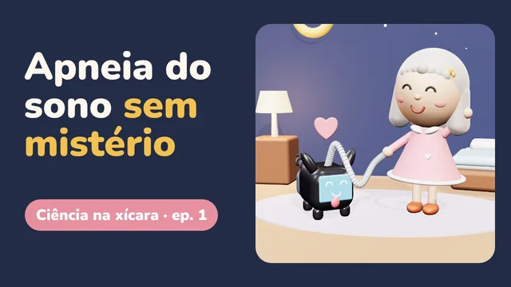
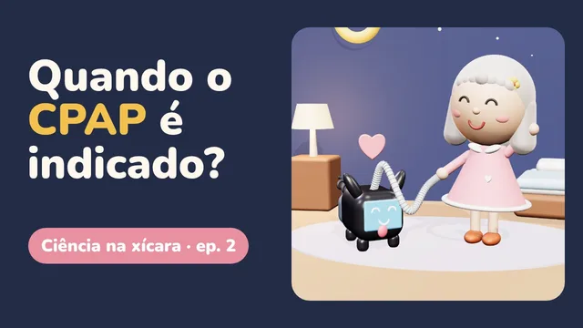
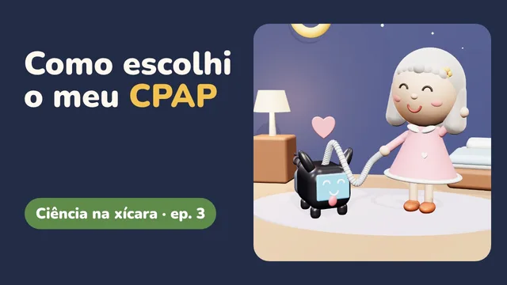
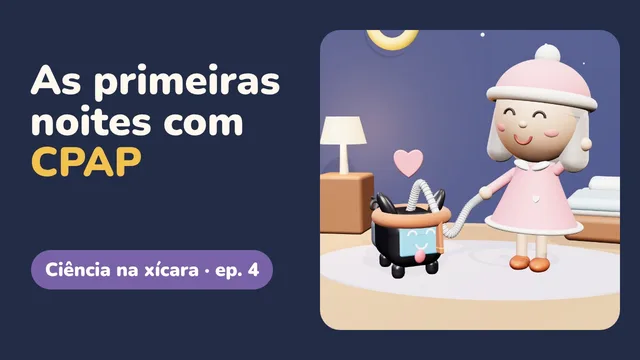
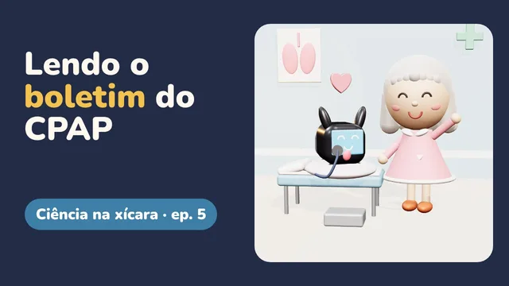
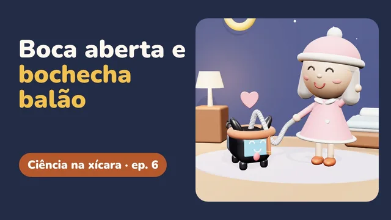
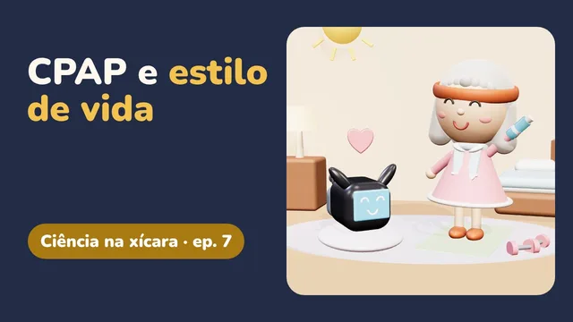
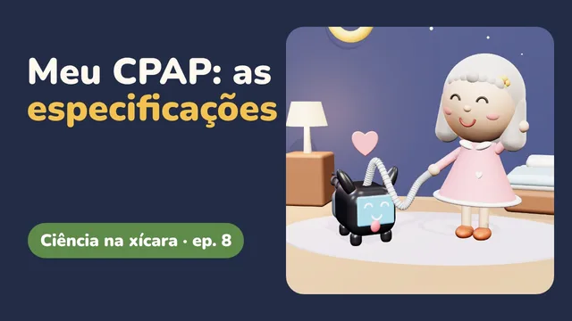

A vida que eu gosto
A vida que eu gostoVídeos
Ciência na xícara
Os assuntos do site em vídeos de cerca de 2 minutos, com a Lola e o Puff. Cada episódio traz as fontes na tela e abre no YouTube.
Relato de uma paciente, não orientação de saúde. O primeiro passo é sempre o seu médico.

Episódio 1 Apneia do sono sem mistério O que é a apneia, os sinais de alerta, quem tem mais risco e como se descobre.
Episódio 2 Quando o CPAP é indicado? Das recomendações mais fortes ao que a ciência ainda discute.
Episódio 3 Como escolhi o meu CPAP Comprar ou alugar, o que comparar, máscara e checklist.
Episódio 4 As primeiras noites com CPAP O que esperar, contado por quem passou.
Episódio 5 Lendo o boletim do CPAP Horas de uso, eventos por hora, vedação e umidificador.
Episódio 6 Boca aberta e bochecha balão O ar que foge pela boca e a minha história com a queixeira.
Episódio 7 CPAP e estilo de vida Parceiros, não rivais: o que dizem as diretrizes.
Episódio 8 Como escolhi o meu CPAP, parte 2: as especificações O que observar no aparelho e na máscara, sem marcas nem modelos.